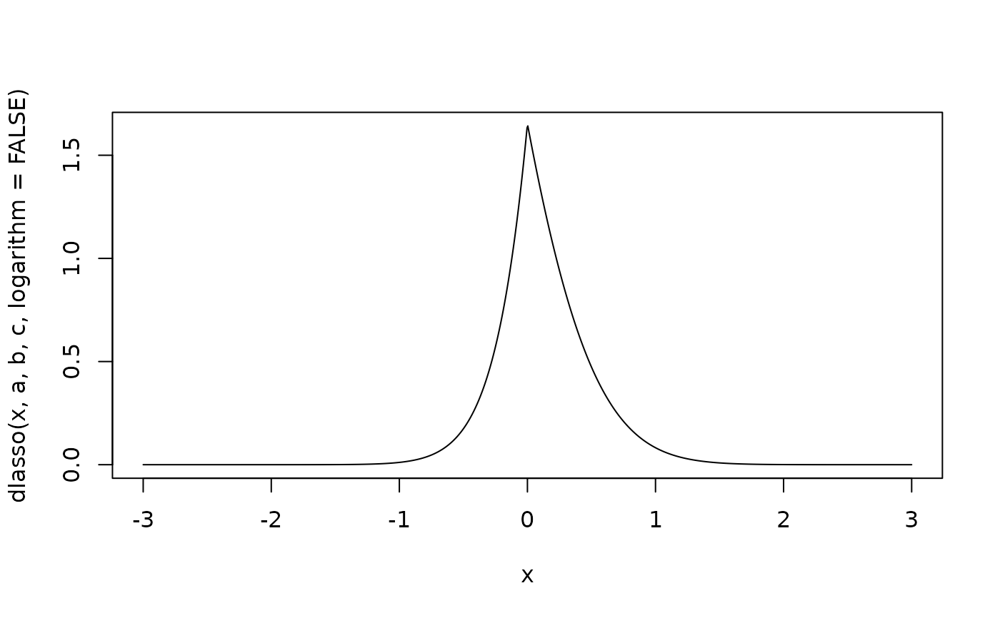
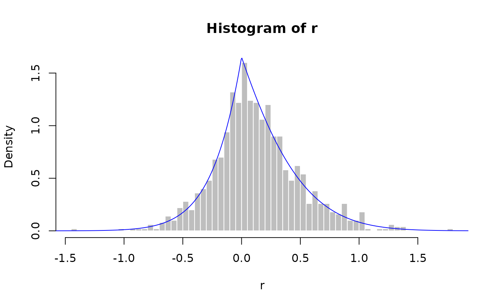

Provides functions related to the Lasso distribution, including the normalizing constant,
probability density function, cumulative distribution function, quantile function, and
random number generation for given parameters a, b, and c.
Additional utilities include the Mills ratio, expected value, and variance of the distribution.
The package also implements modified versions of the Hans and Park–Casella Gibbs sampling algorithms
for Bayesian Lasso regression.
Usage
zlasso(a, b, c, logarithm)
dlasso(x, a, b, c, logarithm)
plasso(q, a, b, c)
qlasso(p, a, b, c)
rlasso(n, a, b, c)
elasso(a, b, c)
vlasso(a, b, c)
mlasso(a, b, c)
MillsRatio(d)
Modified_Hans_Gibbs(X, y, a1, b1, u1, v1,
nsamples, beta_init, lambda_init, sigma2_init, verbose)
Modified_PC_Gibbs(X, y, a1, b1, u1, v1,
nsamples, lambda_init, sigma2_init, verbose)Arguments
- x, q
Vector of quantiles (vectorized).
- p
Vector of probabilities.
- a
Vector of precision parameter which must be non-negative.
- b
Vector of off set parameter.
- c
Vector of tuning parameter which must be non-negative values.
- n
Number of observations.
- logarithm
Logical. If
TRUE, probabilities are returned on the log scale.- d
A scalar numeric value. Represents the point at which the Mills ratio is evaluated.
- X
Design matrix (numeric matrix).
- y
Response vector (numeric vector).
- a1
Shape parameter of the prior on \(\lambda^2\).
- b1
Rate parameter of the prior on \(\lambda^2\).
- u1
Shape parameter of the prior on \(\sigma^2\).
- v1
Rate parameter of the prior on \(\sigma^2\).
- nsamples
Number of Gibbs samples to draw.
- lambda_init
Initial value for the shrinkage parameter \(\lambda^2\).
- sigma2_init
Initial value for the error variance \(\sigma^2\).
- verbose
Integer. If greater than 0, progress is printed every
verboseiterations during sampling. Set to 0 to suppress output.
Value
zlasso,dlasso,plasso,qlasso,rlasso,elasso,vlasso,mlasso,MillsRatio: return the corresponding scalar or vector values related to the Lasso distribution.Modified_Hans_Gibbs: returns a list containing:mBetaMatrix of MCMC samples for the regression coefficients \(\beta\), with
nsamplesrows andpcolumns.vsigma2Vector of MCMC samples for the error variance \(\sigma^2\).
vlambda2Vector of MCMC samples for the shrinkage parameter \(\lambda^2\).
mAMatrix of sampled values for parameter \(a_j\) of the Lasso distribution for each \(\beta_j\).
mBMatrix of sampled values for parameter \(b_j\) of the Lasso distribution for each \(\beta_j\).
mCMatrix of sampled values for parameter \(c_j\) of the Lasso distribution for each \(\beta_j\).
Modified_PC_Gibbs: returns a list containing:mBetaMatrix of MCMC samples for the regression coefficients \(\beta\).
vsigma2Vector of MCMC samples for the error variance \(\sigma^2\).
vlambda2Vector of MCMC samples for the shrinkage parameter \(\lambda^2\).
mMMatrix of estimated means of the full conditional distributions of each \(\beta_j\).
mVMatrix of estimated variances of the full conditional distributions of each \(\beta_j\).
va_tilVector of estimated shape parameters for the full conditional inverse-gamma distribution of \(\sigma^2\).
vb_tilVector of estimated rate parameters for the full conditional inverse-gamma distribution of \(\sigma^2\).
vu_tilVector of estimated shape parameters for the full conditional inverse-gamma distribution of \(\lambda^2\).
vv_tilVector of estimated rate parameters for the full conditional inverse-gamma distribution of \(\lambda^2\).
Details
If \(X \sim \text{Lasso}(a, b, c)\) then its density function is: $$ p(x;a,b,c) = Z^{-1} \exp\left(-\frac{1}{2} a x^2 + bx - c|x| \right) $$ where \(x \in \mathbb{R}\), \(a > 0\), \(b \in \mathbb{R}\), \(c > 0\), and \(Z\) is the normalizing constant.
More details are included for the CDF, quantile function, and normalizing constant in the original documentation.
Examples
a <- 2; b <- 1; c <- 3
x <- seq(-3, 3, length.out = 1000)
plot(x, dlasso(x, a, b, c, logarithm = FALSE), type = 'l')

r <- rlasso(1000, a, b, c)
hist(r, breaks = 50, probability = TRUE, col = "grey", border = "white")
lines(x, dlasso(x, a, b, c, logarithm = FALSE), col = "blue")

plasso(0, a, b, c)
#> [,1]
#> [1,] 0.3739435
qlasso(0.25, a, b, c)
#> [,1]
#> [1,] -0.08945799
elasso(a, b, c)
#> [1] 0.1218306
vlasso(a, b, c)
#> [1] 0.1287739
mlasso(a, b, c)
#> [,1]
#> [1,] 0
MillsRatio(2)
#> [1] 0.4213692
# The Modified_Hans_Gibbs() function uses the Lasso distribution to draw
# samples from the full conditional distribution of the regression coefficients.
y <- 1:20
X <- matrix(c(1:20,12:31,7:26),20,3,byrow = T)
a1 <- b1 <- u1 <- v1 <- 0.01
sigma2_init <- 1
lambda_init <- 0.1
beta_init <- rep(1, ncol(X))
nsamples <- 1000
verbose <- 100
Output_Hans <- Modified_Hans_Gibbs(
X, y, a1, b1, u1, v1,
nsamples, beta_init, lambda_init, sigma2_init, verbose
)
#> iter: 0 lambda2: 111.787 sigma2: 135.243
#> iter: 100 lambda2: 10.8956 sigma2: 25.884
#> iter: 200 lambda2: 61.9234 sigma2: 20.4167
#> iter: 300 lambda2: 94.7265 sigma2: 39.2217
#> iter: 400 lambda2: 72.3648 sigma2: 15.074
#> iter: 500 lambda2: 50.5227 sigma2: 15.9175
#> iter: 600 lambda2: 135.66 sigma2: 20.0574
#> iter: 700 lambda2: 38.0999 sigma2: 30.6545
#> iter: 800 lambda2: 2.58036 sigma2: 22.0707
#> iter: 900 lambda2: 25.2982 sigma2: 45.5914
colMeans(Output_Hans$mBeta)
#> [1] 0.3472431 -0.2546945 0.5260358
mean(Output_Hans$vlambda2)
#> [1] 70.99966
Output_PC <- Modified_PC_Gibbs(
X, y, a1, b1, u1, v1,
nsamples, lambda_init, sigma2_init, verbose)
#> iter: 0
#> iter: 100
#> iter: 200
#> iter: 300
#> iter: 400
#> iter: 500
#> iter: 600
#> iter: 700
#> iter: 800
#> iter: 900
colMeans(Output_PC$mBeta)
#> [1] 0.32005246 -0.09033226 0.38869904
mean(Output_PC$vlambda2)
#> [1] 69.80043